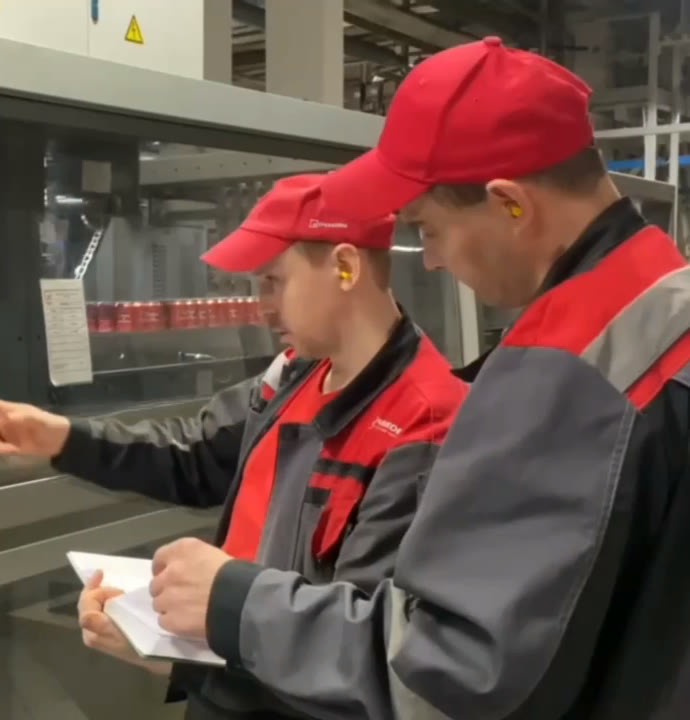

Ролл-ап 850 × 2000 мм для стенда на ярмарке вакансий, в вузе и на дне найма. Видимая часть 850 × 1850 мм, нижние 150 мм уходят в основание. Знак и сумма стоят на уровне глаз, QR на высоте 1050–1300 мм от пола, а ниже 700 мм подробности для тех, кто подошёл вплотную.
На экране макет уменьшен. Печать из Chrome: «Сохранить как PDF», «Фон» включён; для типографии адрес с #bleed (вылеты по 5 мм и метки реза).
Фото пока черновое, это кадр из ролика компании «Оператор линии розлива». Для тиража нужна съёмка наставника и новичка, исходник не меньше 3400 px по ширине. QR демонстрационный и ведёт на демо-адрес season.ochakovo.ru/?src=fair-mgupp, код с меткой своей ярмарки скачивают в HR-панели, вкладка «Источники».
1850 ммверх видимой части1500–1850глаза: знак и сумма1050–1300QR, фото700 ммниже подробности150 ммоснование
Оплачиваемая практика
от 56 000 до 70 000 ₽
в месяц до вычета налога
Заявка за 2 минуты
Наведи камеру на QR. Работа, стажировка и практика с 18 лет

Квас делают люди
Наставник
у каждого новичка, его учили в Учебном центре
Смены
по 12 часов: 8:00–20:00 или 20:00–8:00
Общежитие
для студентов 3 400 ₽ за койко-место
Дорога
корпоративный автобус от м. «Озёрная»
Основание: не видно
850 × 2000 мм, на экране уменьшен. Слева высота от пола